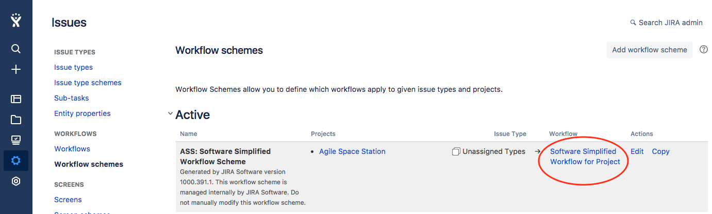
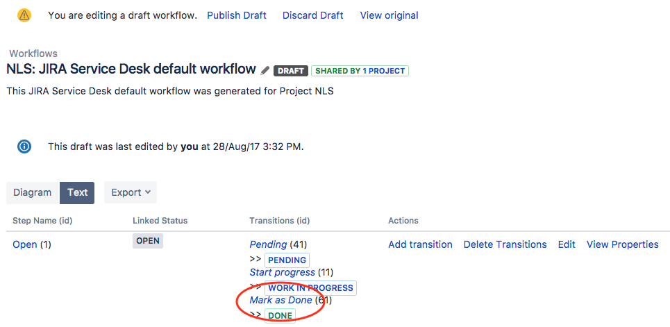
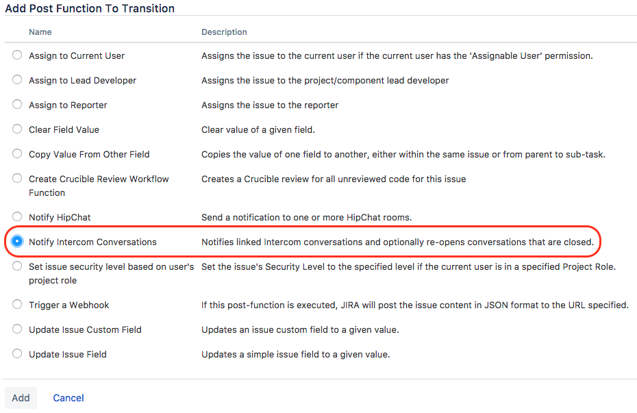
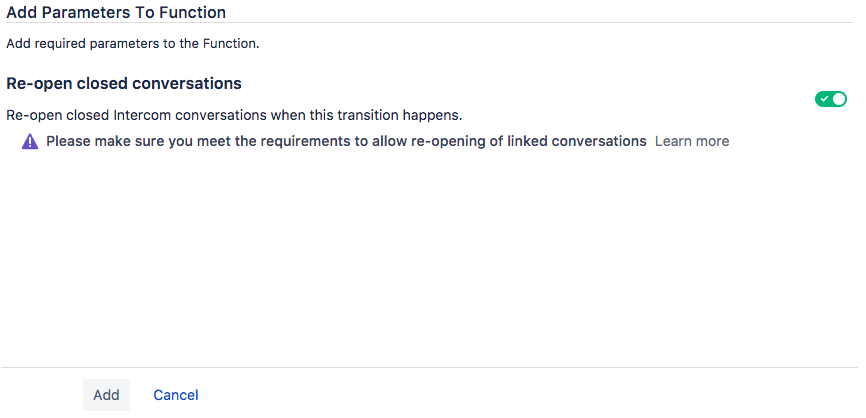
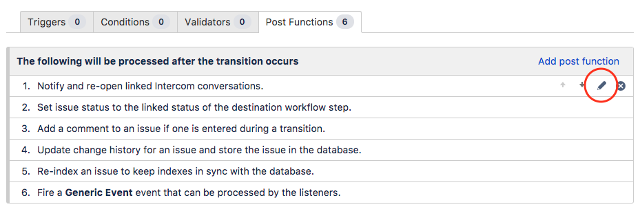
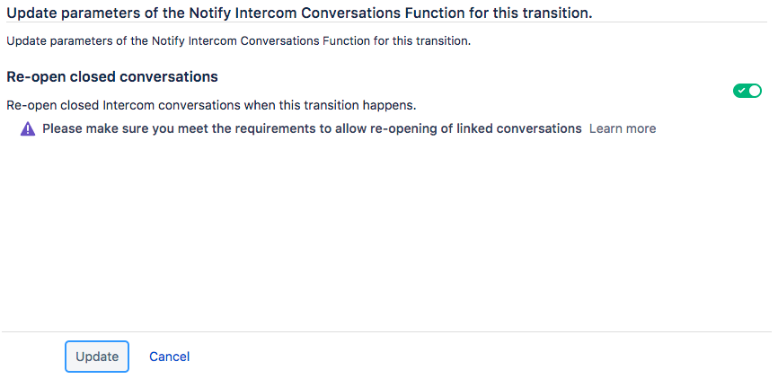

Workflow Post Function: Notify Intercom Conversations
If your process requires to notify and re-open linked Intercom conversations on specific Jira issue transitions the workflow post function Notify Intercom Conversations is for you.
This page walks you through all the steps to configure such a post function.
[info] Prerequisites
- Active Intercom subscription or trial
- Jira Project is connected to Intercom
- Conversation linking is enabled
Add Workflow Post Function
- Click the Cog icon in the left navigation panel and select Issues.
- In the sidebar, under Workflows, click on Workflow schemes.
- Choose the project you'd like to customize, and click the associated Workflow. 
- Click the Edit button to create a workflow draft or resume editing a draft.
[warning] Warning
You may be in Diagram view at first. Proceed to change to Text view if so.
- Then, choose a Step Name, and click on its Transition. 
- On the next screen, click on the Post Functions tab.
- Click Add Post Function.
- Choose Notify Intercom Conversations, then click Add. 
- On the next screen, choose if you like to re-open closed conversations on this transition. Then click Add. 
- Remember to publish the draft.
Edit Workflow Post Function
Once you added the workflow post function you can change its configuration at any time. To do so
- Open the post function in edit mode as described above in Add Workflow Post Function (steps 1-6)
- Find Notify Intercom conversations post function in the list of configured post functions, hover over it, and click on the Pen icon. 
- Update the configuration and click Update. 
- Remember to publish the workflow draft.
Troubleshooting
If your Workflow Post Function is not working please ensure that
- You have a active Intercom subscription or trial
- The Jira project is connected to Intercom
- Conversation linking is enabled in the connection configuration
results matching ""
powered by